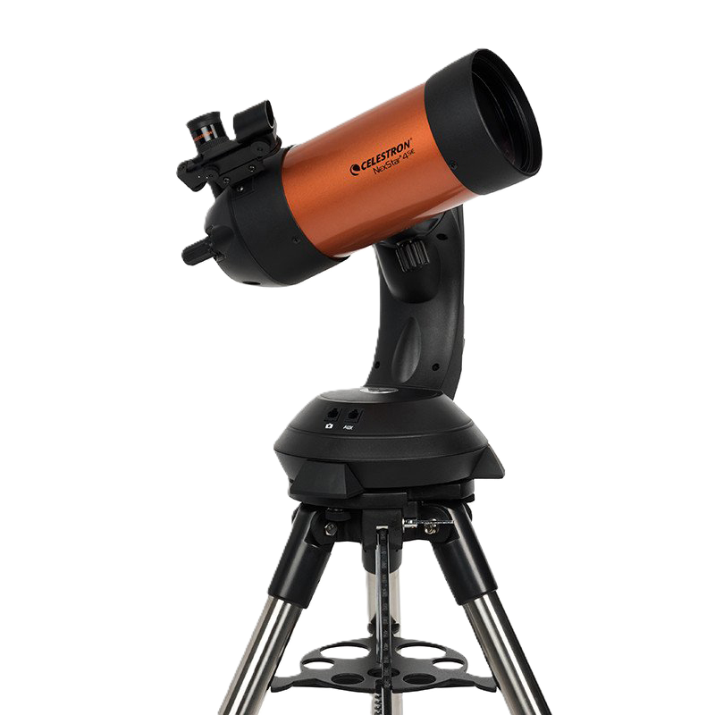
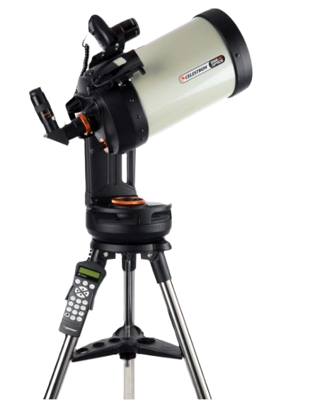
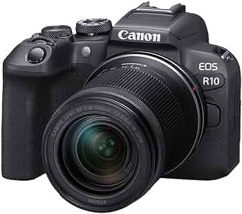

Our Equipment
Discover the professional tools we use to observe the deep sky and planetary neighbors.

2 Units
Celestron NexStar 4 SE
Aperture
102 mm
Focal Length
1325 mm
Focal Ratio
f/13
Ideal for Planetary Observation

Celestron Evolution 8
Aperture
203.2 mm
Focal Length
2032 mm
Focal Ratio
f/10
Versatile Deep Sky Performer

Sky-Watcher 300P
Aperture
305 mm
Focal Length
1500 mm
Focal Ratio
f/4.9
Deep Sky Discovery Monster
Imaging Core

Canon EOS R10
Mirrorless Imaging Unit
OHY175III
CMOS Astro Camera